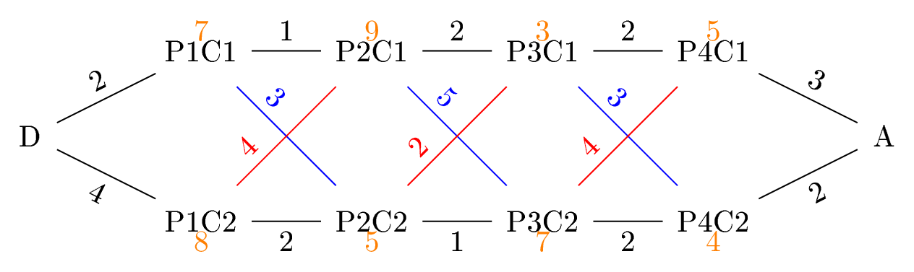

Diviser pour regner
La programmation « diviser pour régner » est une méthode de programmation qui consiste à découper un problème en sous-problèmes très faciles à résoudre.
Ces programmes se décomposent en trois étapes :
- Diviser : découper le problème principal en sous-problèmes
- Régner : résoudre les sous-problèmes séparément
- Combiner : utiliser les réponses des sous-problèmes pour construire réponse au problème principal
Exponentiation rapide
Le calcul de la puissance d'un nombre a par un exposant entier naturel n peut se faire à l'aide d'une boucle. Dans ce cas, l'algorithmie est de complexité linéaire O(n).
Le principe de l'exponentiation rapide est le suivant :
- si n est égal à 0, alors an = 1
- si n est pair (et non nul) alors an = (a × a)n/2
- si n est impair alors an = a × an-1
- Ecrire une fonction récursive puissance(a, n) qui retourne la valeur de an grâce au principe de l'exponentiation rapide.
- Construire la pile des appels récursifs lors de l'appel de puissance(3, 7)
- Combien de multiplications sont effectuées lors du calcul de 37 en utilisant une boucle simple ?
- Combien de multiplications sont effectuées lors du calcul de 37 en utilisant l'exponentiation rapide ?
Tri Fusion
Les algorithmes de tri vues en première sont de complexité quadratique (O(n2)).
Le tri fusion exploite la programmation diviser pour régner afin de réduire cette complexité. Il est basé sur :
- Diviser : séparer la liste en deux listes de longueurs équivalentes
- Régner : trier séparément ces deux listes
- Combiner : reconstituer la liste entière triée à partir des deux moitiés triées (la fusion)
- Où se situe la première valeur devant apparaître dans la liste L ?
- On doit parcourir les deux listes L1 et L2 afin d'en extraire à chaque fois la plus petite valeur. Quelle type de boucle semble être la plus indiquée ?
- Quelles sont les conditions d'arrêt de cette boucle ?
- A la fin de cette boucle, a-t-on parcouru toutes les valeurs ?
- Ecrire une fonction fusion(L1, L2) qui retourne le résultat de la fusion de deux listes L1 et L2
- Combien de comparaisons sont effectuées pour la fusion de deux listes ne n éléments ?
def tri_fusion(L) :
# critère d'arrêt : la liste contient 0 ou 1 élément
if len(L) > 1 :
# diviser :
# régner :
# combiner :
Voici une animation présentant la pile des appels récursifs de la fonction tri_fusion :
Nombre de comparaisons :
Le tri fusion est un algorithme de complexité O(nlog(n)). Démonstration :
Pour tout p ⩾ 0, on note Cp le nombre de comparaisons pour un tri fusion récursif d'une liste de 2p éléments.
Pour p = 0, cet algorithme n'effectue aucune comparaison. Donc C0 = 0.
Pour p > 0, cet algorithme appelle deux tris fusions récursifs sur des listes de 2p-1 éléments et une fusion de deux listes de 2p-1 éléments.
On a donc Cp = 2 × Cp-1 + 2 × 2p-1 = 2 × Cp-1 + 2p comparaisons.
On introduit la suite annexe définie pour p ⩾ 0 par up = Cp2p. On a donc :
u0 = C02 = 02 = 0
et pour tout p > 0 :
up
= Cp2p
= 2 × Cp-1 + 2p2p
= 2 × Cp-12p + 2p2p
= Cp-12p-1 + 1
= up-1 + 1
On reconnaît ici la définition par récurrence d'une suite arithmétique de raison 1 et de premier terme u0 = 0.
Donc pour tout p ⩾ 1, on a up = p
Par définition de la suite up, on a : Cp = up × 2p = p × 2p
En notant N = 2p, on a p = log2(N), et Cp s'écrit : log2(N) × N = N log2(N)
La complexité du tri fusion récursif est O(nlog(n)).
Ordonnancement de chaînes de montage
Nous allons résoudre un même problème en utilisant les différentes méthodes de résolutions vues jusqu'ici.
Voici la situation : en temps normal, dans une usine de fabrication automobile, les voitures sont construites en suivant une seule ligne de montage. Ces chaînes de montages réalisent la même voiture, qui passe de poste en poste. Le remplacement des outils par des outils plus performant implique que le temps de montage sur les postes réalisant la même opération sur deux chaînes différentes ne sont pas identiques.
Le directeur de l'usine doit produire en urgence une voiture. Pour accélérer les temps de fabrication, il décide de la changer de chaîne de montage au moment opportun. Il doit donc déterminer entre quels postes changer de chaîne pour minimiser le temps de fabrication.
Voici le schéma des chaînes de montage que nous utiliserons dans ces exercices.  Les nombres indiquent les temps de montages sur les postes ou bien les temps nécessaires aux changement de postes.
Mise en place des objets utilisés pour toutes les solutions
- nom : le nom du poste
- temps_execution : le temps de montage de ce poste
- chaine : le numéro de la chaîne de ce poste
- postes_precedents : un dictionnaire dont les clés seront les postes précédents et les valeurs les temps de déplacement entre le poste précédent et ce poste
- postes_suivants : un dictionnaire dont les clés seront les postes suivants et les valeurs les temps de déplacement entre ce poste et le poste suivant
- nom : le nom du poste
- temps_execution : le temps de montage de ce poste
- numero_chaine : le numéro de la chaîne de ce poste
Naïf itératif et naïf récursif
Une approche naïve consiste à tester toutes les possibilités afin de trouver la plus rapide.
Dans notre cas, il n'y a que 24=16 possibilités, mais cette approche est inenvisageable sur des chaînes de montages possédants trop de postes.
Une simple boucle permettra ensuite de calculer les temps de montage en suivant les 16 chaînes possibles et de trouver la plus rapide.
- Ecrire une fonction enBinaire(n, b=8) qui convertit un nombre n en binaire puis complète si besoin cette écriture pour avoir un minimum de b bits.
- Ecrire une fonction temps_montage(chemin) qui retourne le temps de montage en suivant le chemin donné sous forme de nombre binaire à 4 bits.
- Ecrire les instructions permettant de trouver le chemin optimal présentant le temps de montage le plus petit.
-
Ecrire une fonction récursive
temps_montage(poste_actuel, chemin_actuel="", temps_actuel=0, liste_resultats=[]) qui retournera la liste des couples (chemin, temps_de_montage) pour tous les chemins partant du poste_actuel et allant jusqu'au poste final. - Utiliser cette fonction pour trouver la chaîne la plus rapide.
Algorithme glouton
Un algorithme glouton consiste à choisir à chaque étape la solution qui est optimale.
Attention, la solution globale obtenue n'est pas toujours la solution optimale.
- En regardant uniquement les postes suivants, comment choisir le poste qui semble être le plus judicieux ?
- Ecrire les instructions permettant de résoudre ce problème par un algorithme glouton.
- La solution donnée par l'algorithme glouton pour cette situation est-elle la solution optimale ?
Algorithme randomisé
Les algorithmes randomisés sont utiles pour les problèmes d'optimisation lorsque le nombre de cas est trop important pour tous les tester. Il consiste à en choisir aléatoirement quelques uns et de choisir la meilleurs des solutions testées.
- Réutiliser les fonctions de la résolution naïve basée sur le binaire pour teste aléatoirement 10 chemins possibles et afficher le meilleur de ces 10 chemins.
- En lançant le programme 5 fois, dans combien de cas trouve-t-on une solution au moins aussi bonne que la solution donnée par l'algorithme glouton ?
- Ecrire une fonction temps_montage_chemin_aleatoire(depart) retournant le couple (chemin, temps_de_montage) d'un chemin choisit de façon aléatoire en choisissant à chaque étape un poste parmi les postes suivant disponibles.